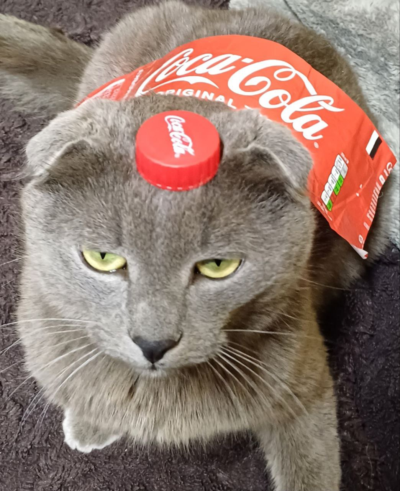
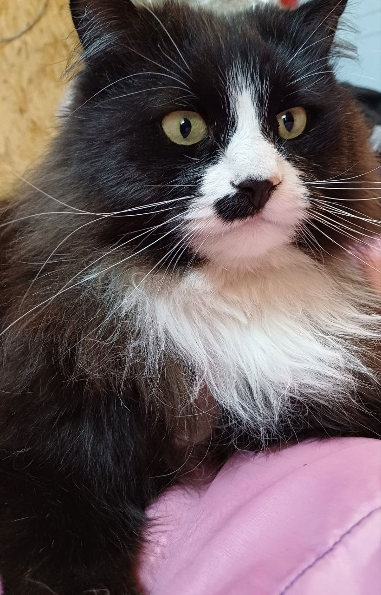
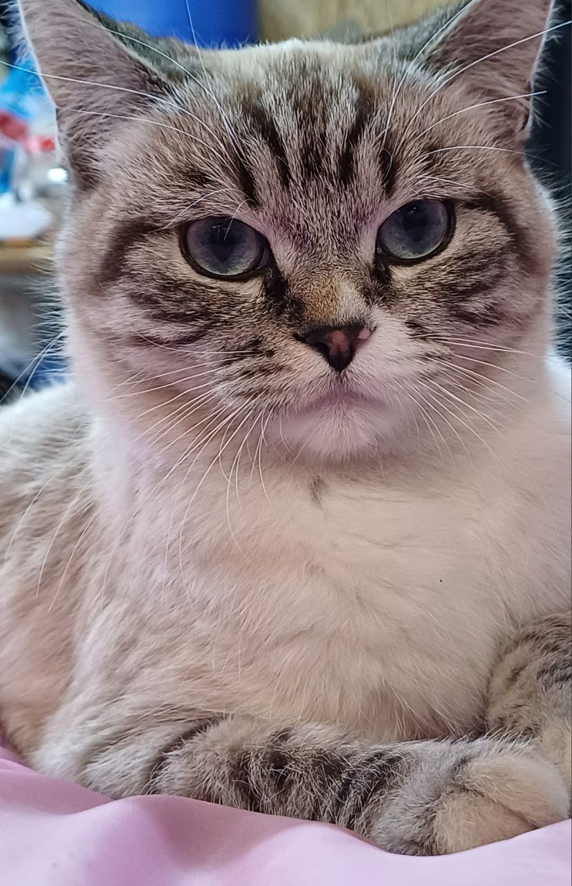

My cats
Марік
|  |
| "Марік coca-cola" |
Уявіть собі кота на ім'я Марік. Цей чудовий котик народився 1 серпня 2021 року, тож йому зараз майже 3
роки.
Марік має сірий окрас, який надає йому особливого шарму.
Його найвідоміша особливість - це віслоухість. Загнуті вуха роблять його ще більш чарівним.
Марік -
це справжній джентльмен серед котів. Він дуже добрий, миролюбивий і завжди готовий допомогти.
Однак найцікавіше, що Маріка абсолютно не цікавить, що з ним роблять. Він може лежати в будь-якій позі
або
місці, а головне для нього - це можливість поспати. Марік вміє насолоджуватися життям і вчить нас
цінувати
маленькі радощі.
Це був короткий напис про Маріка, чудового котика, який завжди приносить радість своїм непосильним
характером та неповторним шармом.
Боня
|  |
| Боня |
Уявіть кота на ім'я Боня. Цей котик народився 8 березня 2019 року, він, взятий від мами дуже рано, через
що, має
складний характер. Через те, що він
був відірваний від матері на ранньому віці, він часто виявляє ознаки агресії.
Окрас Боні - чорний, але його білі носочки та груди додають йому особливого шарму. Цей контраст кольорів
робить його дійсно вишуканим.
Боня іноді демонструє агресивність, особливо відносно інших котів, які живуть з ним. Це пов'язано з
відсутністю відчуття безпеки у ранньому віці. Проте, за всім цим тається чуйне серце, яке шукає любов і
розуміння.
Цікаво, що Боня виявляє певну квіркливість: він любить носки! Іноді він навіть приносить їх, мабуть,
хочучи показати, як він вміє бути корисним та хоче отримати похвалу.
Це короткий напис про Боню, непересічного котика, який, незважаючи на свої складнощі, завжди має
потенціал стати вірним другом і надійним компаньйоном.
Маргоша
|  |
| Маргоша |
Маргоша — це маленька кішечка, яка народилася у вересні 2023 року. Вона ще зовсім молода і дуже
грайлива. Часто можна побачити, як вона весело ганяється за іграшками або бігає по кімнаті, вигадуючи
нові
розваги.
Одним із її улюблених місць для відпочинку є ноги. Вона любить зручно влаштуватися біля них і засинати,
створюючи теплу й затишну атмосферу.
Маргоша також має веселого друга — кота Маріка. Вони часто
жартома борються між собою, надаючи один
одному
неабиякого задоволення. Їхні ігри завжди веселі й безпечні, що додає радості в наш дім.
Однак, Маргоша має одну особливість — вона не терпить, коли її беруть на руки. Вона може трохи
понервувати й
намагатиметься звільнитися. Але бувають моменти, коли вона сама приходить, щоб поласкатися, показуючи
свою
прихильність і любов.
Маргоша – це справжнє сонечко в нашому домі, яке приносить багато радості й тепла.